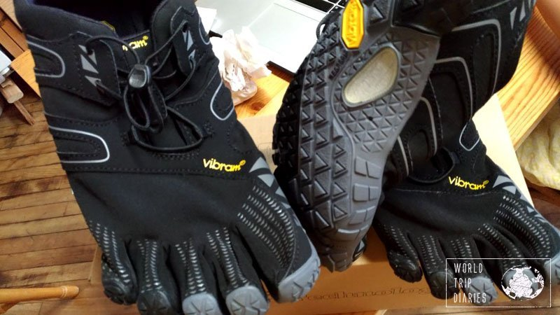

Originele foto:
Foto gecomprimeerd tot 90%:

Foto gecomprimeerd tot 70%:

Foto gecomprimeerd tot 40%:

De verandering in kwaliteit is niet altijd zichtbaar maar het is het best te zien aan de
papierprop of de zolen van de rechtse schoen. Het is duidelijk zichtbaar hoe de kwaliteit
achteruit gaat hoe lager het percentage is.
De bestanden worden ook kleiner van bestandsgrootte naarmate het percentage daalt maar
dit daalt niet op eenzelfde percentage.